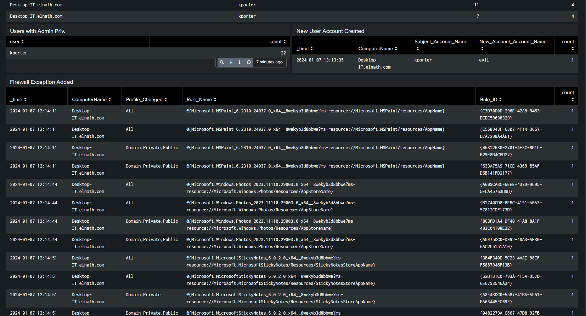

When I first started looking at Windows Firewall activity in Splunk, I honestly didn’t think much of it.
Compared to something like malware execution, suspicious logins, or a brand-new user account, a firewall rule being added can feel pretty routine.
But the more I worked with the data, the more I realized that firewall changes can tell you a lot about what’s happening on a system.
A Windows Firewall exception is basically a rule that allows a specific application, service, port, or type of network traffic through Windows Firewall under certain conditions.
The way I think about it is simple: the firewall is the checkpoint, and the rules decide what gets through.
That doesn’t mean every firewall exception is bad. A legitimate application may need network access. Windows itself may create or modify rules. An administrator may also make an approved change.
The part that matters from a SOC perspective is figuring out whether that change actually makes sense.
Instead of only asking “Was a firewall rule added?”, I want to know: “Why was it added, what does it allow, and should it be there?”
Why Should a SOC Analyst Care?
Firewall changes can give an analyst visibility into what is being allowed to communicate through a system.
That can be useful for spotting things like:
- Unauthorized access
- Unexpected firewall changes
- Misconfigurations
- Policy violations
- Policy drift
- Possible lateral movement
- Backdoors
- Persistence mechanisms
- Applications receiving network access they normally should not have
The key thing here is that the event itself does not automatically mean something malicious happened.
A firewall rule could be completely normal.
But it could also be the first clue that something needs a closer look.
Maybe a legitimate program was installed and created its own rule.
Or maybe an unexpected process added a rule so it could communicate with another system.
The event may look similar either way.
That is where context becomes important.
Windows Firewall Event Activity
One of the Windows events I focused on while working with this data was:
A new rule was added to the Windows Firewall exception list.
There are a few related events I also want to keep in mind:
4946
A firewall rule was added.
4947
A firewall rule was modified.
4948
A firewall rule was deleted.
4950
A Windows Firewall setting changed.
In Splunk, this type of Windows event data may be brought
in using a Windows Event Log source type such as
XmlWinEventLog.
What I like about looking at these events in Splunk is that I’m not just seeing what the firewall configuration looks like right now.
I can actually see when things changed.
That gives me something to investigate.

Looking at My Splunk Dashboard
In my homelab, I added a Firewall Exception Added panel to my Splunk dashboard.
I didn’t want to look at firewall events by themselves, so I placed them alongside other Windows activity that could give me more context.
The dashboard includes:
- Users with administrative privileges
- Newly created user accounts
- Firewall exceptions being added
That gives me a better starting point than looking at one isolated log.
Users with Admin Privileges
This panel shows accounts with elevated privileges on the system.
That matters because if a security-related configuration changes, one of my first questions is going to be whether an account with enough permissions was involved.
It doesn’t mean the admin account caused the change. It just gives me another piece of context.
New User Account Created
This panel tracks when a new user account is created.
In my dashboard, kporter appears as the
subject account, while a new account named
evil is created.
That immediately catches my attention.
It still does not mean the account creation and firewall activity are connected, but now I have another event worth looking into.
This is where correlation starts to matter.
Firewall Exception Added
This is the main panel I wanted to focus on.
It gives me a quick view of:
- When the event happened
- Which computer it happened on
- Which firewall profile was affected
- Which rule or application was involved
- The unique rule ID
- How many matching events were returned
Instead of digging through raw logs every time, I can see the information I actually care about in one place.
Breaking Down the Firewall Panel
Here is what each field is telling me.
_time
This tells me when the firewall event happened. The timestamp becomes useful when I start comparing the event with other activity happening around the same time.
ComputerName
This tells me which endpoint the firewall change happened on. If similar activity starts appearing across several machines, that may become more interesting than one isolated event.
Profile_Changed
This shows which Windows Firewall profile was affected, including Domain, Private, Public, or All.
Rule_Name
This identifies the firewall rule or application connected to the event.
Rule_ID
This gives me the unique identifier tied to the firewall rule, which can help when tracking the exact rule during an investigation.
count
This shows how many matching events Splunk returned and helps me see whether I’m looking at one change or repeated activity.
What Stood Out in the Results?
In my dashboard, I can see firewall rules associated with applications such as:
- Microsoft Paint
- Windows Photos
- Microsoft Sticky Notes
At first glance, those all look harmless.
But that is exactly why I don’t want to stop at the application name.
I still want to know:
- Was the rule expected?
- Did the application really create it?
- Does that application normally need this type of network access?
- Is the executable where it is supposed to be?
A familiar name doesn’t automatically mean I should ignore the event.
Finding the Event Is Not the Investigation
This is probably the biggest thing I’ve been trying to get better at.
Finding Event ID 4946 is useful.
But that is not the end of the investigation.
It is really just the beginning.
A firewall rule can be added because of a completely normal software installation. An administrator may have intentionally changed the configuration.
But the same type of event could also come from:
- An unauthorized application
- Unexpected remote access
- A persistence mechanism
- A possible backdoor
- Configuration drift
- Policy drift
So I don’t want to immediately label the event as malicious.
I want to figure out whether it belongs in the environment.
What Is Policy Drift?
One thing I wanted to understand better while working with firewall data was policy drift.
Policy drift is basically what happens when a system slowly moves away from its approved security configuration.
For example, maybe a workstation originally has a small set of approved firewall rules.
Then over time:
- Applications get installed
- Software updates create new rules
- Admins make temporary changes
- Troubleshooting rules get added
- Old rules never get removed
- Applications get more permissions
Eventually, the system may look very different from the original baseline.
No single change may look dramatic.
But over time, those small changes can create more exposure than intended.
That is what makes policy drift worth paying attention to.
Questions a SOC Analyst Should Ask
This is the part I really want to keep improving on.
I don’t want my investigation to stop at:
“I found the event.”
I want to understand what the event actually means.
Was it an administrator, Windows, a software installer, a legitimate application, a script, or an unexpected process?
Was there a software update, new installation, maintenance, or another approved reason for the change?
I would want to look at whether the traffic is inbound or outbound, the port, protocol, source IP, destination IP, and firewall profile.
Does the program belong on the system? Is it running from the expected location? Does it normally need network access?
This is where I would pivot into other Splunk data and look for activity happening around the same timeframe.
What Else Would I Monitor in Splunk?
The firewall event gives me one piece of the puzzle.
To make the detection more useful, I would also want to monitor some of the surrounding network activity.
Unusual Ports
Is the system opening or using a port I would not normally expect?
Does the application actually need that port?
An unusual port alone isn’t proof of malicious activity, but it gives me another reason to investigate.
Source IP Addresses
Where is the traffic coming from?
Is the source expected? Is it another internal system, an approved service, or something I don’t recognize?
That can help me understand who or what is communicating with the endpoint.
Destination IP Addresses
I would also want to know where the system is trying to communicate.
This becomes especially useful if a new firewall rule is followed by outbound traffic to an unfamiliar destination.
Now I’m starting to connect the firewall event to actual network behavior.
Connecting the Dashboard Events
This is one of the reasons I like having multiple panels on the same dashboard.
I can start looking at things together.
That does not mean those events are automatically connected.
I still have to investigate that.
But if I notice a new account being created, elevated privileges being used, and an unexpected firewall change all happening around the same timeframe, I’m definitely going to want to know why.
That is the part of SIEM work I’m trying to get better at.
Not just finding logs.
Not just writing the search.
But actually connecting what I’m seeing.
MITRE ATT&CK Context
I also wanted to connect this activity back to MITRE ATT&CK.
The technique that stood out to me was:
Impair Defenses
Tactic: Defense Evasion
One way an attacker may try to weaken defenses is by disabling or modifying firewall protections.
That could include changing firewall rules so certain traffic is allowed through.
But this is an important distinction:
Event ID 4946 by itself does not mean T1562 occurred.
A legitimate application can create the same event.
The MITRE mapping becomes more meaningful if the investigation shows that someone intentionally changed the firewall to weaken security controls or support malicious activity.
The SOC Analyst Mindset
The biggest takeaway for me is that the Windows event is not the answer.
It is the lead.
Event ID 4946 tells me that a firewall
rule was added.
Now I have to figure out why.
So the questions I want to keep asking are:
- What changed?
- Who or what changed it?
- Why did it change?
- What does the rule actually allow?
- What program is connected to it?
- Is this normal for the environment?
- What happened before and after it?
That is where the actual investigation starts.
My Takeaway
Before working with this data, I mostly thought of Windows Firewall exceptions as a list of programs that were allowed through the firewall.
Now I look at them a little differently.
They are another source of visibility.
A firewall change might be completely normal.
But it can also help point me toward:
- Unauthorized changes
- Misconfigurations
- Policy drift
- Unexpected network access
- Backdoors
- Persistence
- Attempts to weaken security controls
The goal isn’t to treat every firewall change like an incident.
The goal is to know what normal looks like, notice when something doesn’t fit, and then use the other data available to figure out what is actually happening.
Visibility tells me that something happened.
Investigation tells me what it means.